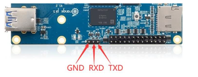
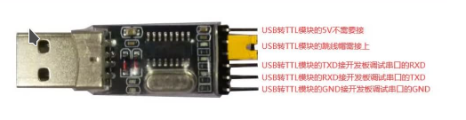

orangepi5 镜像构建与说明¶
本章主要介绍openEuler Embedded中orangepi5（香橙派5）系列板卡的镜像构建，使用和特性介绍。
香橙派支持SD卡启动，因此我们构建出的镜像在烧录到SD卡中即可在香橙派开发板中启动，建议准备一个8G以上的SD卡，并准备一个USBtty串口设备。
orangepi5硬件介绍¶
参考: orangepi5 介绍
镜像构建与使用¶
构建机器和oebuild工具准备：
（1）准备一个ubuntu x86构建主机环境（建议22.04，依赖Python>=3.10，配置建议预留200G存储）
（2）安装oebuild（具体oebuild用法可参见 安装步骤 ），注意以普通用户安装oebuild，例：
sudo apt install python3 python3-pip # 如果python3和pip模块已安装，请忽略此python3的安装命令 pip install oebuild
（3）准备oebuild的工具依赖（docker）：
sudo apt install docker docker.io -y sudo groupadd docker sudo usermod -a -G docker $(whoami) sudo systemctl-reload && systemctl restart docker sudo chmod o+rw /var/run/docker.sock
oebuild构建代码准备：
（1）初始化构建分支代码（请不要以root及sudo权限执行）：
oebuild init buildwork # 说明： # * buildwork为存放目录， # * 未使用-b指定分支，默认使用master分支，等同于oebuild init buildwork -b master # 假设执行路径位于/home/user/，执行后根据提示进入对应目录 cd /home/user/buildwork oebuild update #执行完成后，将在 /home/user/buildwork/src/ 目录下载好主构建源码，并初始化构建虚拟环境。
（2）初始化orangepi5构建源码及配置：
cd /home/user/buildwork oebuild generate -p orangepi5 -d orangepi5 # 以上命令可追加-f参数，通过oebuild generate -l查看支持的配置，比如-f openeuler-rt开启软实时
镜像构建和部署
（1）构建orangepi5镜像
cd /home/user/buildwork/orangepi5 oebuild bitbake # oebuild bitbake执行后将进入构建交互环境 # 注意您此时应该处于进入oebuild bitbkae环境的工作根目录（如/home/openeuler/orangepi5 bitbake openeuler-image
构建完成后，输出件见/home/user/buildwork/orangepi5/output/[时间戳]，备用组件内容如下
├── openeuler-image-orangepi5-[时间戳].rootfs.wic └── vmlinux-5.10.0-openeulerNote
openeuler-image-orangepi5-[时间戳].rootfs.wic已经包含了BootLoader，kernel以及文件系统。
vmlinux为未加工的原始内核基础格式文件。
若需要交叉编译工具链，可通过如下命令生成，将在output目录下有新时间戳子目录得到输出件。
# 注意您此时应该处于进入oebuild bitbkae环境的工作根目录（如/home/openeuler/orangepi5） bitbake openeuler-image -c populate_sdk
（2）烧录orangepi5镜像到SD卡：
烧录orangepi5镜像仅仅需要将wic文件烧录到SD卡中即可，我们将介绍在ubuntu平台下的烧录方式，进入orangepi5编译好后的wic文件目录下，将SD卡插入主机相关的卡口，识别SD卡设备名
# 插入SD卡后通过以下命令可以看到SD卡映射的设备名 fdisk -l # Disk /dev/sda: 29.12 GiB, 31267487744 bytes, 61069312 sectors # Disk model: Storage Device # Units: sectors of 1 * 512 = 512 bytes # Sector size (logical/physical): 512 bytes / 512 bytes # I/O size (minimum/optimal): 512 bytes / 512 bytes # Disklabel type: dos # Disk identifier: 0xfe130924 # # Device Boot Start End Sectors Size Id Type # /dev/sda1 2048 526335 524288 256M 6 FAT16 # /dev/sda2 526336 7812499 7286164 3.5G 83 Linux # # 例如以上信息即可分析出SD卡映射的设备名为/dev/sda # 执行dd命令将wic文件写入/dev/sda dd if=openeuler-image-orangepi5-[时间戳].rootfs.wic of=/dev/sda
（3）启动orangepi5并连接调试：
开发板的接线方式如下图：
串口的接线方式如下图：
ubuntu下调试
如果终端在ubuntu系统下，则建议安装一个minicom串口工具，具体安装命令如下：
apt install minicom
然后开启tty通信，按如下命令：
minicom -D /dev/ttyUSB0 -b 1500000
windows下调试
如果终端在windows系统下，则建议安装MobaXterm，下载MobaXterm网址 https://mobaxterm.mobatek.net，下载home-Portable版本，然后运行。
打开软件后，设置串口连接的步骤如下：
a, 打开会话的设置界面
b，选择串口类型
c，选择串口的端口号（根据实际情况选择对应的端口号），如果看不到端口号请使用360驱动大师扫描安装USB转TTL串口芯片的驱动
d，选择串口的波特率为1500000
f，最后点击“OK”按钮完成设置
然后给开发版上电，即可看到系统启动日志。